在第4章中，我们仔细思考了
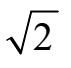
的“确切”值，并得出结论：我们不能把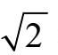
表示为两个整数的比——即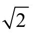
是一个无理数。然而，我们可以得到与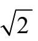
非常接近的十进制近似值。虽然
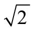
不是一个有理数，但我们并没有对是否存在令x2=2的数字x提出疑问。事实上，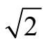
是一个介于1.41和1.42之间的合理数字。这是一个实数的例子。一个实数可以像这样表达：±XXXXX.XXXXXXXXXXX…
实数的集合表示为R。
其中X是数字。数字以“+”或“–”符号开始（尽管通常省略“+”），小数点前有许多个但有限的数字，后面是无限多个数字。例如，数字
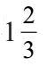
可以写作1.666666666…有关无限循环小数的更广泛讨论，请参阅第3章。
如果一个数字如
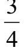
的十进制展开是有限的（0.75），它也可以使用这种写法。我们只需在后面补上无尽的0:0.7500000…因此
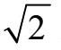
是一个实数。它只是碰巧不是一个有理数。换句话说，有一个实数x可以满足x2=2。同样，还有一个实数可以满足方程x2=3，即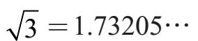
或许能以此类推。每一个形式如x2=a的方程都有解吗？如果a是一个正实数（或0），那么a 就是解，小数表达式可以转化为我们想要的任何多的数字。一种可视化的方法是绘制y=x2–a的图形，看看曲线（这个形式的方程可用抛物线表示）在何处与x轴相交。这个数字将满足x2–a=0，或者，相当于x2=a。右侧第一张图显示了y=x2–3和y=x2–7。两条抛物线分别在
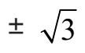
和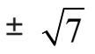
的位置与x轴相交。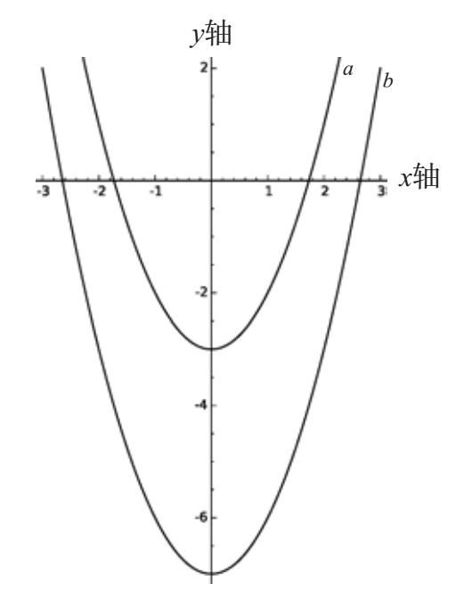
抛物线a表示y = x2 - 3
抛物线b表示y = x2 - 7
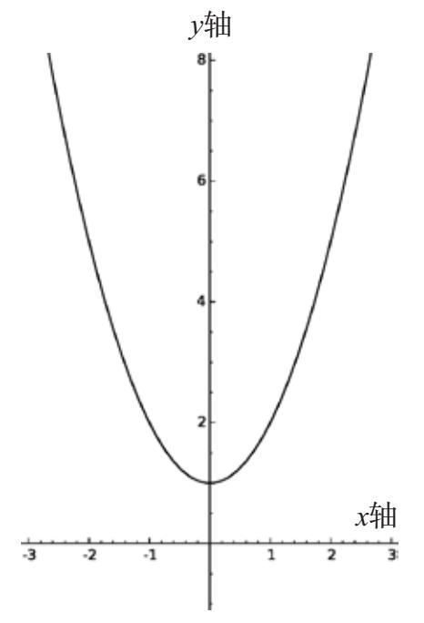
y = x2 + 1
当我们寻找一个数x使得x2=–1时，问题就会发生相当大的变化。有这样的数字吗？如果我们计算一个正数的平方，结果会是另一个正数；例如，52=5×5=25＞0。同样，如果我们将负数进行平方，结果也是正的：（–5）2=（–5）×（–5）=25＞0。如果我们求0的平方，结果是0。情况看起来令人绝望。
事实上，如果我们绘制方程y=x2+1的图并寻找抛物线与x轴相交的位置，我们的绝望会加剧。其结果显示为右侧第二张图。我们很快就看到这条抛物线完全位于x轴上方——并绝不可能与x轴相交。
我们试图放弃，宣称“负数没有平方根”。但这种态度缺乏想象力。诚然，没有一个满足2x=–1的实数（real number），但也许还有一些其他类型的数字。
解决这个问题的方法非常简单。没有实数x令x2=–1，所以我们只需要制造出一个新的数字，并把它称为i，它具有必要的属性：i2=–1。
问题接踵而至了：“这个数字是从哪里来的？”“你不能只是制造数字！”“这没有意义！”
为了让大家放心，我们称i为虚数（imaginary number）。突然间，i被降级到二等公民的身份，我们不再期望把i根铅笔放在我们办公桌上的咖啡杯里，或者担心有人会告诉我们，到某个地方的距离是i英里[1]。
所谓的实数并不比虚数更“真实”。我们不能把–3根铅笔放在咖啡杯里，也不能说到某个地方的距离恰好是2英里。确实，实数对某些物理现象（如温度或陆地面积）的建模非常有用。但是虚数的用处体现在其他领域，比如量子力学和电子学。所有的数字都是“想象的”，因为它们是思维的发明。
假设我们同意玩这个游戏。那么，我们想一下，如果我接受这个数字i，我们来看看它能做什么。我知道i×i=–1。那i+i呢？遵循算术的标准规则，结果为另一个虚数：2i。我们可能想知道，如果我们把这个数字进行平方，会发生什么。尝试一下！
（2i）2=（2i）×（2i）=2×i×2×i=2×2×i×i
=4×（i×i）=4×（–1）=–4
换句话说，2i是–4的平方根。
我们可以将
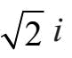
进行平方，让我们看看会得到什么：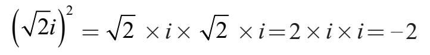
所以我们看到2 i是–2的平方根。事实上，一旦我们接受i进入数字家族，我们不仅得到了–1的平方根，还有所有负实数的平方根！任何形式为bi的数字，其中b是一个实数，这个数就被称为纯虚数。
如果我们将两个纯虚数相加，如4i和2i，我们得到另一个纯虚数：6i。如果我们将两个纯虚数相乘，如3i和–2i，我们会得到一个实数：
3i×–（2i）=3×（–2）×i×i=–6×–1=6
为了将虚数完全纳入数字家族，我们需要将实数和虚数一起进行加、减、乘、除。这种做法的框架被称为复数（complex number）系统。这是对于实数的一个扩充，包括形式为a+bi的所有数字，其中a和b是实数，例如：3+4i。
数字i是一个复数，因为我们可以把它写成0+1i。同样，任何实数，如–7，也是一个复数，因为它可以写成–7+0i。
复数的加法很简单，我们只须分别处理同类项：
（3+2i）+（4–3i）=（3+4）+（2–3）i=7–i
可以写得更古板一些：7+（–1）i。
减法也同样不费力：
（3+2i）–（4–3i）=（3–4）+[2–（–3）]i=–1+5i
经过片刻的思考，我们会得出，两个复数的和或差也是一个复数。我们可以写成代数的形式：
（a+bi）+（c+di）=（a+c）+（b+d）i
（a+bi）–（c+di）=（a–c）+（b–d）i
其中a，b，c，d是实数。
复数的乘法更具挑战性。让我们通过将3+2i和4–3i相乘进行说明。
（3+2i）×（4–3i） =3×（4–3i）+2i×（4–3i）分配
= （3×4–3×3i）+（2i×4–2i×3i）
再分配
= （12–9i)+（8i+6）
= 18–i
在代数上，如果a+bi和c+di是两个复数，则它们的乘积通过下面的公式得出：
（a+bi）×（c+di）=（a c–bd）+（ad+bc）i
这意味着当我们让两个复数相乘时，其结果也是一个复数。
除法是基本运算中最复杂的。在一头扎进（a+bi）÷（c+di）的解释之前，我们首先思考一个复数的倒数（reciprocal）是多少。回忆一下，如果x的倒数是另一个数字y，那么xy=1。例如，
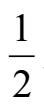
就是2的倒数。1+2i的倒数是几？（1+2i）×（a+bi）=1，我们需要一个数字a+bi。我们假设
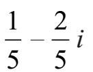
满足这个要求：
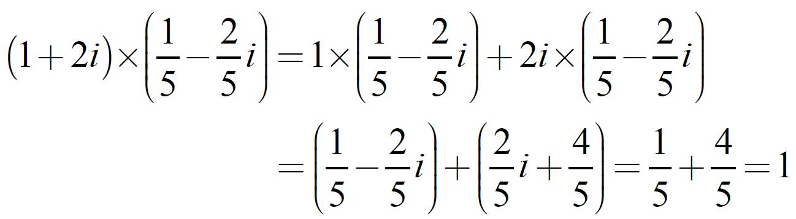
一般来说，a+bi的倒数的公式如下：
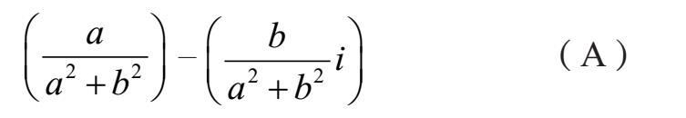
为了说明这是正确的，将表达式（A）乘以a+bi，有条理地进行代数运算会发现结果为1。
要注意（A）中的分母都是a2+b2。如果这恰好等于0，则公式无效，因为0不能做除数。然而，只有在a和b都为0的情况下，a2+b2=0。换句话说，除0+0i以外的所有复数都有倒数。这正是我们所希望的：正如0是唯一没有倒数的实数，0也是唯一没有倒数的复数。任何非零复数的倒数都是一个复数。
随着对倒数的掌控，我们终于可以考虑进行除法。将数字Y除以X等于用X乘以Y的倒数。随后得出的两个复数的商（只要除数不是0）同样是一个复数。
下面是结论：基本运算+，–，×和÷都可以与复数完美匹配。我们可以将这些运算应用于任何一对复数（0除外），其结果依然是一个复数。
但现在让我们回到带来麻烦的运算：平方根。实数是“有缺陷的”，因为一些数字有平方根，而其他数字没有。所以，我们通过创建一个新的数字
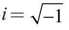
来扩展实数。然后我们应用算术运算，实数系统成长为复数系统。但是我们解决平方根问题了吗？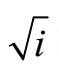
呢？我们是否需要制造另一个新数字，并将其并入，从而创造一个怪异的“超复合”数字系统？值得庆幸的是，复数已经足够丰富，可以为我们提供所需要的所有平方根！让我们看看要如何找到i的平方根而不需创建任何新的数字。
我们正在寻找一个复数a+bi，其性质是（a+bi）2=i。让我们做一点代数运算来解决这个问题。我们开始扩展
（a+bi）2=（a+bi）×（a+bi）=（a2–b2）+（2ab）i
为了使这个表达式等于i=0+1i我们需要：
◥2a–b2=0以及2ab=1
我们找到这些方程的解如下。
第一个方程a2=b2意味着a=b或a=–b。
如果a=b，则2ab=1可以重写为2a2=1。除以2得
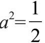
，所以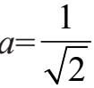
或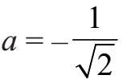
。由于a=b，我们发现
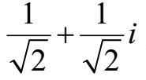
和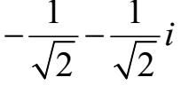
都是i的平方根。你可以通过求平方来验证，并看到在这两种情况下，结果等于i。另一种情况，a=–b，会产生同样的两个解。
通过做更多的工作，可以证明所有的复数都有平方根，所以不需要扩展复数来适应平方根运算。
那么立方根呢？数字c的立方根是数字x，满足x3=c。每个复数在复数系统中都有一个立方根吗，还是需要发明新的数字？
挑战：找到i的立方根。其中之一是–i，因为(–i)×(–i)×(–i)=–i3=i。另外两个是什么？答案在下一页。
等式x3=c可以被重写为x3–c=0。立方根问题可以进行更广泛地扩展。那么每个多项式（polynomial）方程都有一个复数解吗？例如：是否有复数x可以满足
3x5+（2–i）x4+（4+i）x3+x–2i=0?
复数理论的一个具有里程碑意义的成果便是每一个多项式方程都有一个解！这个成果被称为代数基本定理。通常用来描述这种情况的术语是：复数使代数完备（algebraically complete）。
下面是这个重要事实的完整陈述：
定理（代数基本定理）。设d为正整数，令c0，c1，c2，…，cd是复数且cd≠0。那么有一个复数z可以使
cdzd+cd–1zd–1+···+c2z2+c1z+c0=0
从某种意义上说，实数是有缺陷的，因为存在一些不能解决的基本运算问题（如：求a×a+1=0中的数字a）。简单来说，代数基本定理表明，在复数域中所有这些问题都有解。不过找到这些解就是另一回事了！
i的立方根。除–i之外，还有以下解：
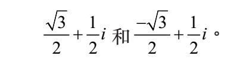
[1] 1公里=0.6214英里。——编者注